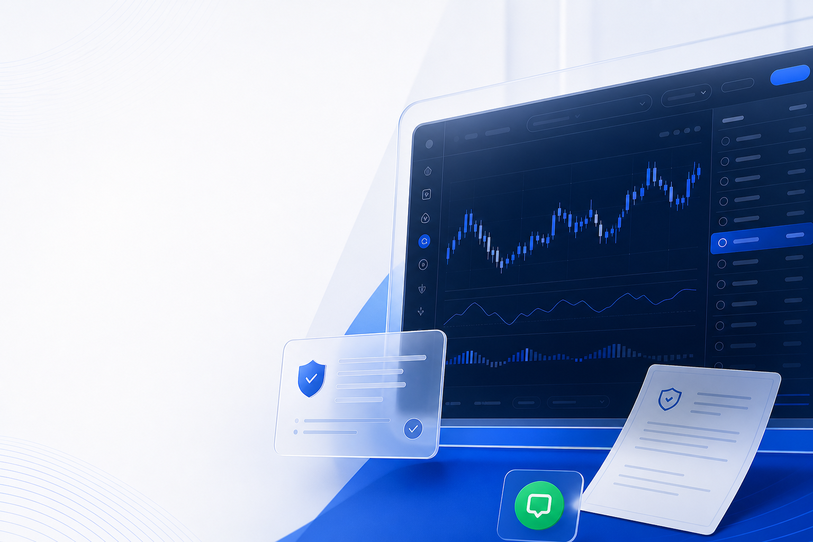
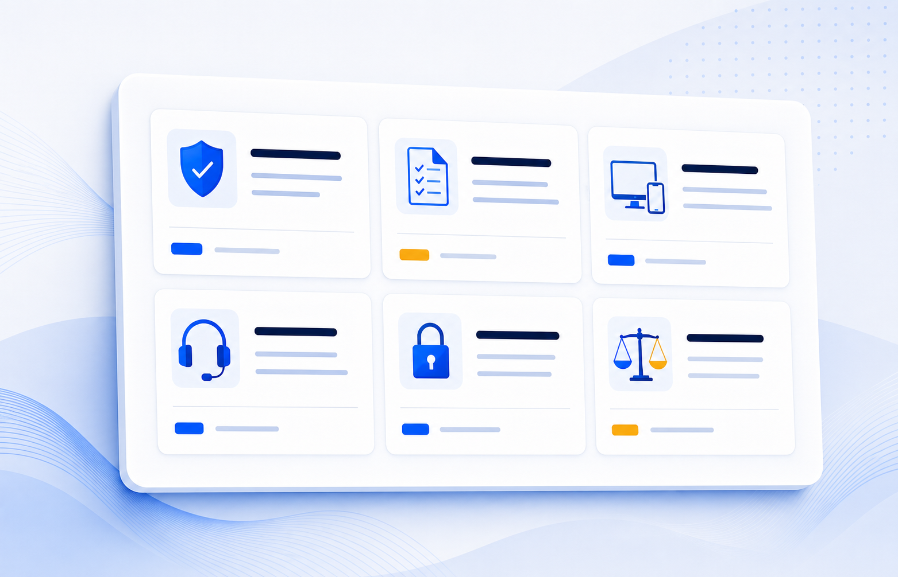
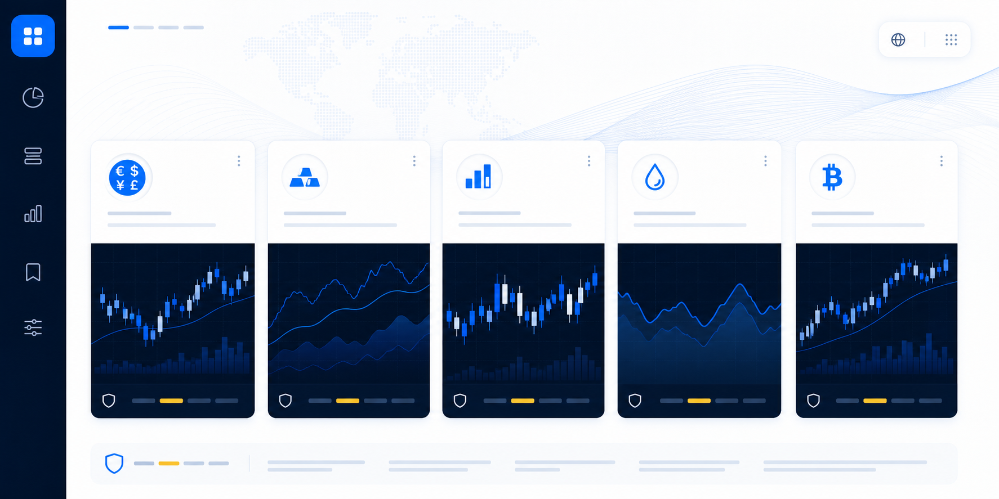
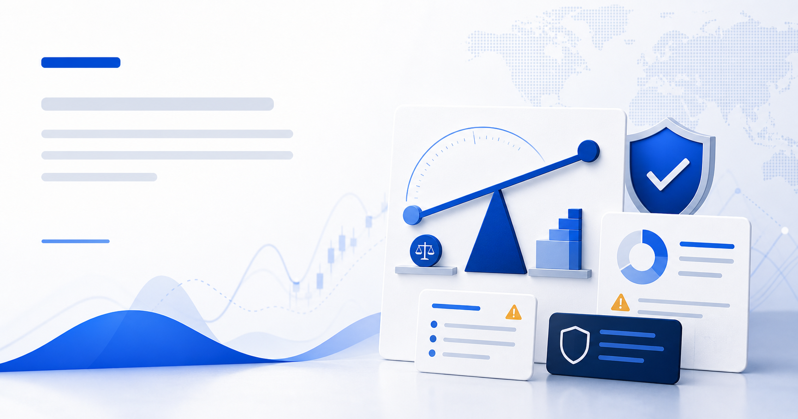

คำตอบหลัก
ระบบ visual ที่ดีสำหรับ broker ไม่ใช่ luxury lifestyle หรือ fake trading success แต่คือ operational trust ที่ตรวจสอบได้ แล้วนำเสนอให้ cinematic พอเหมาะ.
เก็บ Fizens rhythm, Framer parallax, cinematic Hero, account/support CTA rhythm และ positioning แบบ Thai-first broker.
ใช้ Fizens ต่อการใช้ motion จาก Framerลดพลังของ fake-live chart แล้วเพิ่มภาพกลุ่ม risk/proof/process โดยใช้ placeholder ทุกจุดที่ข้อมูลยัง pending.
นำด้วย proofไม่มี fake numbersลบ template finance-app devices, wealth-growth language, testimonial, star rating, generic SaaS pricing และ public deposit CTA.
คุม complianceบนมือถือ Hero ใช้ optimized poster image หนึ่งใบ ส่วน Spline/parallax หนัก ๆ ให้ fallback เป็น static พร้อม reduced-motion.
คุม LCPรองรับ accessibilityแกนคิดของ Visual
สำหรับ BestonFX ภาพควรสื่อว่า “broker นี้เป็นระบบ ระบุเงื่อนไขชัด ติดต่อได้ และจริงจังด้าน operation” หน้าเว็บ competitor broker ใช้ product surfaces, platform cards, market instruments, security/protection modules, regulatory proof, support proof และ risk warning ใกล้ conversion path ซ้ำ ๆ Exness เน้น Thai support, platform access, safety และ market instruments [2][3]. XM วาง risk warning ซ้ำใกล้ CTA [4]. IUX และ IC Markets เน้น execution, security, account types, market access และ data/proof modules [5][6][7]. Pepperstone ใช้ brand authority, market/product tiles, analyst content, certification และ risk warning ใน footer [8].
เอกสาร handoff เดิมของ BestonFX เดินมาถูกทางแล้วด้วย premium command-center Hero, parallax depth layers, risk disclosure bar, LINE CTA, market cards, account selector และ education/tool modules [1]. สิ่งที่ต้องปรับคือให้ทุกภาพทำงานหนึ่งในสี่อย่างนี้: clarify product, prove trust, explain risk, หรือ guide conversion. ภาพตกแต่งที่ไม่ทำหนึ่งในสี่ข้อนี้ควรถูกลดบน desktop และตัดออกบน mobile.
ภาพตัวอย่างที่ generate แล้ว
ภาพชุดนี้เป็นตัวอย่าง art direction สำหรับ Framer POC ไม่ใช่ final production asset. ก่อนใช้จริงต้องตรวจ crop, text artifact, compliance และ performance อีกครั้ง.

ใช้เป็น mood ของ Hero: broker operations terminal, abstract chart, risk/support cues, ไม่มีเลข spread, P/L, license หรือข้อความที่ต้องอนุมัติ.

ใช้แทน fake certificate/review: แสดงระบบตรวจสอบและสถานะ pending แบบ visual โดยไม่อ้าง regulator หรือ license จริง.

ใช้กับ Markets Preview: asset-class cards + microchart แบบ neutral ไม่ใช่ live quote, signal หรือ performance claim.
ใช้กับ Support CTA: เน้น admin handoff, เอกสาร, platform guide และคำถามทั่วไป; ไม่ใส่คำแนะนำซื้อขายหรือข้อความ buy/sell.

ใช้กับ Articles/Risk Disclosure: diagram, document cards, warning motifs แบบ calm ไม่ทำให้ดู panic และไม่ขายกำไร.
ข้อค้นพบจาก ChatGPT 5.5 Pro
นี่คือ peer review แบบ model-to-model จากไฟล์ที่แนบมา รายการที่รับเข้าแผนจะถูก fold เข้า execution plan ส่วนรายการที่มีความเสี่ยงจะอยู่ในสถานะ placeholder จนกว่าจะ verify.
| ข้อค้นพบ | การตัดสินใจ | วิธี implement สำหรับ BestonFX |
|---|---|---|
| ภาพ Hero ควรเป็น trading command center ไม่ใช่ lifestyle หรือ fantasy แบบ “green chart up”. | รับเข้าแผน | ทำ Hero visual เป็น MT5-inspired operations terminal ที่มี abstract market watch, order panel, rebate/risk cues และไม่มี P/L หรือ account balance ที่อ่านได้. |
| ภาพ Trust visual ต้องมาก่อนความสวย: document stack, shield, verification, license-proof slots. | รับเข้าแผนพร้อม guardrails | ใช้ verification matrix และ compliance stack visuals. ห้ามใส่ license number, regulator logo, certificate seal หรือ award badge จนกว่าจะ source-approved. |
| ภาพ product range สำคัญกว่า Hero สวยอย่างเดียว. | รับเข้าแผน | ใช้ asset-class cards ใน Markets page และ Home preview: Forex, Metals, Indices, Commodities, Crypto CFDs พร้อม sample-data styling แบบ neutral. |
| ส่วน Accounts, calculators, market chips และ IB estimator ควรทำเป็น Framer components จริง ไม่ใช่ generated screenshots. | รับเข้าแผน | ทำ account comparison, rebate calculator, pip calculator, margin calculator และ IB estimator เป็น component briefs. Raster images ใช้เป็น mood/background support เท่านั้น. |
| ส่วน Rebate ต้องมี visual layer ของตัวเอง เพราะเป็น reason-to-believe สำคัญของ broker. | รับเป็น placeholder | เพิ่ม Rebate Flow Card: lot to eligibility to weekly rebate. value และ rule ต้องเป็น demo/pending จนกว่าจะ compliance-approved. |
| งาน Support ควร LINE-first และ Thai-first แต่หลีกเลี่ยง generic headset stock photos. | รับเข้าแผน | ใช้ LINE OA support mock, Thai admin process cards, QR placeholder และ general-info topics เท่านั้น. ไม่มี buy/sell advice bubbles. |
| หน้า legal/risk disclosure ควรเรียบ อ่านง่าย และจริงจัง. | รับเข้าแผน | ใช้ document layouts สำหรับ Risk Disclosure, Terms และ Privacy พร้อม icons น้อยที่สุด. ไม่มี hero art, parallax หรือ growth CTA. |
| ภาพ Hero image ควรตั้ง target ประมาณ 250-400 KB หลัง compression; below-fold images ใช้ lazy-load. | รับเป็น performance target | ภาพ Generated PNG samples เป็น research preview เท่านั้น. Framer production exports ควร compress เป็น WebP/AVIF พร้อม static mobile fallback. |
ระบบ 9-Asset ที่ปรับแล้ว
| ลำดับความสำคัญ | ชื่อ Asset | ใช้กับ | ควร build เป็น | กฎ Guardrail |
|---|---|---|---|---|
| P0 | beston-home-hero-command-center.webp | ใช้ใน Home Hero | ภาพ generated still + optional Spline สำหรับ desktop | ไม่มี P/L, balance, spread, license หรือ profit signal. |
| P0 | beston-trust-compliance-stack.webp | ใช้ใน Trust / Why | ภาพ generated visual + Framer status cards | ข้อมูล regulator/entity facts ทั้งหมดต้อง pending จนกว่าจะ approved. |
| P0 | beston-markets-instrument-universe.webp | ใช้ใน Markets / Home | ภาพ generated visual + native asset cards | ใช้ sample-data style, ไม่มี live prices หรือ recommendations. |
| P0 | beston-line-support-system.webp | ใช้ใน Support / CTA | ภาพ generated still + Framer chat component | ใช้เฉพาะ general support เท่านั้น ไม่มี personalized trading advice. |
| P1 | beston-mt5-device-stack.webp | ใช้ใน Tools / Platform | Device mockup | ทำเป็น MT5-inspired แต่ไม่ copy platform UI หรือใช้ real account screenshot. |
| P1 | beston-rebate-flow-card.svg | ใช้ใน Rebate section | Framer/SVG component | กฎ rules และ payout values ต้อง verify ก่อน publish. |
| P1 | beston-partner-dashboard-preview.webp | ใช้ใน Partners | ภาพ generated dashboard preview | ตัวเลขทั้งหมดเป็น sample-only; ไม่มี guaranteed IB income. |
| P1 | beston-risk-education-cover-template.webp | ใช้ใน Articles | Reusable cover template | ไม่มี trade calls หรือ prediction-style visuals. |
| P2 | beston-spline-hero-fallback.webp | ใช้ใน Mobile/reduced motion | Compressed static poster | โหลดเร็ว และแทน heavy 3D/parallax เมื่อจอต่ำกว่า 768px. |
ต้อง Generate ก่อน
ภาพ Heroภาพ Trustหน้า Marketsระบบ LINE
4 assets นี้ทำให้ Framer POC ดูดีขึ้นมากที่สุด โดยไม่เพิ่ม visual clutter เกินจำเป็น.
ต้อง Build เป็น components
หน้า Accountsส่วน Rebateเครื่องมือ Pipเครื่องมือ Marginระบบ IB
เครื่องมือ decision tools ควรแก้ไขได้, responsive และตรวจ compliance ได้ใน Framer หรือ future Next.js.
ทำให้เรียบ
หน้า Risk Disclosureหน้า Termsหน้า Privacy
หน้า legal ต้องการ readability และ seriousness มากกว่า art direction หรือ motion.
สัญญาณจาก Research
รูปแบบ pattern ที่ใช้ได้จริงคือ “regulated fintech proof + real product interface + visible risk framing” มากกว่า “forex hype”.
| กลุ่มแหล่งข้อมูล | Pattern ด้าน visual ที่พบ | ผลต่อ BestonFX |
|---|---|---|
| Exness Thailand [2][3] | มี Thai-localized support, platform access, global-market instruments, safety/protection pages และ anti-scam guidance. | ใช้ Thai support และ protection/process cards เป็น trust objects ที่มองเห็นได้ ไม่ใช่แค่ legal copy ใน footer. |
| XM [4] | ส่วน trading benefit ถูกวางคู่กับ risk warning ใกล้ action points. | วาง risk warning ใกล้ Hero CTA และ repeat ใน account/markets pages โดยไม่กลืนทั้งหน้า. |
| IUX [5][6] | เน้น Execution, DDoS, liquidity, regulation, KYC, AML, client fund protection, ratings และ reviews. | นำมาใช้กับ BestonFX เป็น execution/security/process imagery ได้ แต่ต้องเลี่ยง ratings/testimonials จนกว่าจะ verify และ approve. |
| IC Markets [7] | ใช้ instrument tiles, raw pricing, execution speed, account types, live-looking quotes และ platform proof. | ใช้ market/instrument cards ได้ แต่ chart/quote visuals ทั้งหมดต้อง abstract หรือ demo-labeled จนกว่าข้อมูลจริงจะ approved. |
| Pepperstone [8] | ใช้ brand partnership imagery, top-traded instruments, platform chooser, analyst content, certification และ risk footer. | ใช้ authority ผ่าน DX ecosystem, platform choice, education content และ certification placeholders. ไม่ยืม sports/lifestyle tone. |
| Credibility research [11] | ผู้ใช้ประเมิน credibility ผ่าน layout, typography, images, consistency และ usefulness อย่างรวดเร็ว. | งาน visual polish ไม่ใช่แค่ cosmetic สำหรับ broker แต่เป็นส่วนหนึ่งของ trust perception โดยเฉพาะในหมวดการเงิน. |
| Financial promotion rules [9][10] | แนวทาง financial promotions ควร fair, clear, not misleading และให้ภาพรวมที่ balance ระหว่าง benefit กับ risk. | ตัวเลือก image ต้องไม่สื่อ guaranteed profit, risk-free trading, effortless withdrawals, legal status หรือ verified scale. |
| Framer and web performance [12][13][14] | ตัว Framer auto-resizes และ converts images ได้ แต่ Hero/LCP images ยังต้อง discover ได้เร็วและตั้ง priority ให้ถูก. | อัปโหลด original คุณภาพสูง, ใช้ Auto resolution, เลี่ยง heavy lossless และเลี่ยง Hero asset ที่ lazy-loaded หรือ script-discovered. |
ตรวจ Audit แผนเดิม
เอกสาร handoff วันที่ 29 พ.ค. แข็งแรงแล้ว แต่ asset plan ควรเจาะจงขึ้นและ safe ขึ้นก่อนลงมือใน Framer.
| รายการ Asset เดิม | ความเสี่ยงหรือ gap | แนวทาง upgrade | สถานะ |
|---|---|---|---|
| ภาพ Hero แบบ trading command center | อาจกลายเป็น generic AI “trading room” หรือสื่อ institutional access โดยไม่มี proof. | ทำให้เป็น BestonFX operations terminal: brand shell, abstract charts, Thai support chip, risk microcopy, ไม่มี P/L หรือ license text ที่อ่านได้. | เก็บไว้และ refine |
| ชั้น Parallax depth layers | 3 layers อาจเพิ่ม page weight และทำให้เกิด motion fatigue. | ใช้เฉพาะ desktop ใน Home/Markets. mobile ใช้ poster image ใบเดียว และ reduced motion ต้อง disable transform layers. | เก็บไว้แบบจำกัดขอบเขต |
| ภาพ risk ledger แบบ abstract | อาจดูเหมือน fake compliance certificate. | ใช้ “verification matrix” visual ที่มี status: `verified`, `pending legal`, `placeholder`. ห้ามใส่ seal ถ้ายังไม่ approved. | อัปเกรด |
| การ์ด Market cards | ราคา live-looking prices และ green arrows อาจสื่อ performance หรือ recommendation. | ใช้ asset-class tiles พร้อม risk bands และ neutral microcharts. ตัวเลขทุกตัวต้อง demo-labeled หรือ approved. | ต้องมี guardrails |
| ตัวอย่าง Mock LINE chat | อาจเผลอสื่อ personalized trading advice. | แสดงเฉพาะ admin support topics: account steps, documents, platform guide, general information. ไม่มี buy/sell language. | เก็บไว้ |
| ตัวอย่าง Mock IB estimator | เสี่ยงสูงที่จะสื่อ guaranteed IB income. | ใช้ disabled/demo state. แทน animated earnings ด้วย process timeline และ approved-media workflow. | ลดน้ำหนัก |
| ภาพ Article hero images | ภาพ generic AI trading photos ลด credibility และเพิ่ม noise. | ทำ editorial system ที่ consistent: objects, platform closeups, market maps, Thai explainers, ไม่มี fake dashboards หรือ faces ถ้าไม่ใช่ของจริง. | จัดเป็น system |
ระบบ Image ของ BestonFX
ใช้ 8 image families แล้ว map เข้ากับ revised 9-asset execution list ด้านบน ทุก family ต้องมี job, placement, art direction และ compliance rule ชัดเจน.
ใช้กับบรรยากาศ Hero/product: matte device, abstract market UI, Thai support chip, risk cue.
ใช้กับ trust และ verification: status grid พร้อม approved/pending placeholders.
ใช้กับ MT4/MT5/platform access: ใช้ clean device shells ไม่ใช่ real account screenshots.
ใช้กับ Forex, metals, indices, commodities, crypto CFDs: educational, neutral, ไม่มี signals.
ใช้กับ Risk disclosure, leverage, volatility, margin: calm document/diagram style.
ใช้กับ LINE OA, admin handoff, document checklist: process การ support จริง ไม่มี trading advice.
ใช้กับ IB path, approved media, compliance review: เน้น process มากกว่า income.
ใช้ทำภาพ article สำหรับ market basics และ platform guides ด้วย style ที่ consistent และ reuse ได้.
กฎ Art Direction
| มิติที่ต้องคุม | กฎ | เหตุผล |
|---|---|---|
| สี Palette | ใช้ light Fizens/royal-blue base เพื่อความต่อเนื่องของ POC และใช้ navy surfaces แบบควบคุมเฉพาะ trading modules พร้อม Apple Blue `#024ada` accents. | เคารพ repo rebrand เดิม แต่ยังรักษาความ serious แบบ broker. |
| กราฟ Charts | ใช้ abstract line/candlestick shapes, muted colors และ demo labels. เลี่ยง live quote screens ที่อ่านได้ เว้นแต่ต่อ real data ภายหลัง. | ป้องกัน fake performance หรือ trading-condition claims. |
| บุคคล People | เลี่ยง AI trader portraits. ใช้ real team/support photos หลัง approved เท่านั้น หรือใช้ cropped hands/process shots ที่ไม่ claim identity. | ภาพ fake people ลด trust และอาจกลายเป็น fake testimonials. |
| ตรา Badges | ไม่มี regulator logos, award logos, certification logos, app-store ratings หรือ Trustpilot-style blocks จนกว่าจะ source-approved. | ความเสี่ยงด้าน legal และ credibility สูงกว่า visual benefit. |
| การเคลื่อนไหว Motion | ใช้ parallax เพื่อ reveal layered information ไม่ใช่เพื่อดึงความสนใจออกจาก risk warnings หรือ CTAs. | ใช้ Framer Scroll Transform รองรับ pattern นี้ได้ แต่ accessibility ต้องมี reduced-motion fallback [15][16]. |
แผน Image ราย Section
นี่คือ revised image map สำหรับการ execute Fizens remix.
| ชื่อ Section ใน Framer | แนว Visual/image | Specs ที่ต้องใช้ | กฎ Compliance |
|---|---|---|---|
| RiskDisclosureBar | ใช้ minimal risk icon พร้อม text. ไม่มี animation delay. | ใช้ Vector icon 20px, high contrast, sticky top. | ต้อง visible ก่อนหรือพร้อม CTA แรก. |
| HeroSection | ใช้ asymmetric trading operations terminal พร้อม device mock, soft depth และ Thai support chip. | ใช้ Desktop: 2400x1600 WebP poster + optional Spline. Mobile: 1200x1500 crop, no Spline. | ไม่มี real spreads, P/L, license number หรือ profit arrows. |
| Trust Stack | ใช้ verification matrix: entity, risk, platform, support, security, pending legal. | 1600x1000 WebP or Framer-native card grid. | ตัว Status chips ต้องเขียน `รอยืนยัน` เมื่อ facts ยัง pending. |
| Account Path Selector | ใช้ comparison UI แบบ calm พร้อม disabled placeholder values. | ทำเป็น Framer component ไม่ใช่ raster screenshot. | ไม่มี spread/leverage/commission ถ้ายังไม่ approved. |
| Markets Preview | ใช้ market universe tiles: Forex, metals, indices, commodities, crypto CFDs. | หนึ่ง 2400x1600 background พร้อม reusable cards 5 ใบ. | ตัว Crypto CFDs ต้อง mark high-risk. ไม่มี recommendation copy. |
| Trading Tools Grid | ใช้ calculator, economic calendar, risk explainer และ platform guide cards. | ทำเป็น Framer Workshop components. ใช้ demo labels. | เครื่องมือ Tools เป็น educational ไม่ใช่ advice. |
| DX Ecosystem Strip | ใช้ product panels 3 ใบ: DX Academy, DX Trade, DX Exclusive. | 1200x900 panels or native Framer cards. | ตัว DX Trade ห้ามสื่อ signal accuracy หรือ profit. |
| LINE Support CTA | ใช้ LINE OA chat mock, QR placeholder, admin support topic cards. | 1200x900 WebP or native chat component. | ไม่มี personalized buy/sell advice ใน bubbles. |
| IB Partner Preview | ใช้ partner process timeline, approved media checklist, demo estimator. | ควรใช้ native component มากกว่า image. | ไม่มี earning promise หรือ animated income counter. |
| Articles CMS | ใช้ editorial stills: glossary, platform guides, risk basics, market context. | 1200x630 WebP, consistent crop-safe style. | ไม่มี trade calls และ fake “market prediction” screenshots. |
| Footer/legal | ใช้ compact wordmark, risk seal, contact icons. | ใช้ SVG/logo และ text ไม่ใช่ heavy image. | ข้อความ Legal/entity/regulatory copy ต้อง pending จนกว่าจะ approved. |
ชุด Prompt สำหรับ Image Generation
นี่คือ model-ready briefs สำหรับ Higgsfield, Sora stills หรือ image tools ใกล้เคียง ใช้หนึ่ง prompt ต่อหนึ่ง asset แล้วคัดงานด้วย human review อีกครั้ง.
1. Hero หน้า Home: BestonFX operations terminal
Cinematic Thai forex broker operations terminal, premium but sober fintech landing page hero, matte glass trading device shell on right side, abstract market UI with unreadable placeholder chart shapes, Thai LINE admin support chip, subtle risk disclosure microcopy as abstract text blocks, light royal-blue and white Fizens base with controlled deep navy terminal surface, Apple Blue #024ada accents, calm institutional lighting, asymmetric 1/3 composition, no people, no profit numbers, no readable spreads, no license text, no regulator logos, 85mm lens look, crisp web landing page asset, high detail, clean negative space --ar 3:2 --quality 4k
2. ภาพ Trust Stack: verification matrix
Premium compliance verification matrix for a Thai-first forex and CFD broker website, clean white and soft blue UI cards, status chips for verified, pending legal, and placeholder, abstract shield and document motifs, no official seal, no readable license numbers, no fake certificate, serious financial services tone, crisp vector-like interface, subtle depth, mobile-friendly crop --ar 16:10 --quality 4k
3. ภาพ Markets Preview: neutral asset universe
Abstract global markets universe for forex broker landing page, five educational asset-class tiles for forex, metals, indices, commodities, and crypto CFDs, neutral microcharts with no buy sell signals, muted blue and slate palette, risk-band markers, glass dashboard planes, no live prices, no green profit arrows, no recommendation language, premium fintech editorial style --ar 3:2 --quality 4k
4. Module สำหรับ LINE Support
Thai LINE OA customer support mockup for broker onboarding, clean chat interface with topic bubbles for account steps, documents, platform guide, and general questions, QR placeholder, LINE green used only as small accent, no trading advice, no buy sell message, warm human support feel without fake face portraits, responsive web component style --ar 4:3 --quality 4k
5. Hero บทความ Risk Education
Editorial Thai financial education hero image about forex CFD risk, calm document layout, leverage diagram, volatility wave, neutral market map, no person, no fear tactics, no profit promise, clean white and blue BestonFX visual language, suitable for 1200x630 blog card, high readability, no readable tiny text except abstract blocks --ar 1200:630 --quality 4k
กฎ Implementation บน Framer
Framer ช่วย optimize upload ได้ แต่ visual quality และ LCP ยังขึ้นกับ source asset และวิธี build Hero.
| หัวข้อ | หลัก Best practice | Action ที่ต้องทำสำหรับ BestonFX |
|---|---|---|
| การตั้ง Image resolution | ระบบ Framer Auto สร้างหลายขนาดและ balance quality/performance ได้ [12][13]. | ใช้ Auto กับ asset ส่วนใหญ่. ใช้ Auto Lossless เฉพาะเมื่อ brand gradients หรือ UI lines มี banding. |
| ภาพ Hero/LCP | ภาพ LCP ควรถูก discover ได้เร็ว และไม่ควร lazy-load [14]. | ทำ hero poster เป็น image element จริง หรือเป็น Framer image ที่ discover ได้ชัด ไม่ใช่ delayed embed หรือ CSS background อย่างเดียว. |
| การใช้ Spline | ตัว Spline embed ใน Framer ได้ และควร optimize เพื่อโหลดเร็วข้าม device [17]. | ใช้ Spline เฉพาะ desktop hero. ผู้ใช้ mobile และ reduced-motion ได้ static poster แทน. |
| การใช้ Scroll Transform | ระบบ Framer รองรับ scroll-linked position, scale, rotation และ opacity transforms [15]. | ใช้ parallax เฉพาะ Home และ Markets. หน้าอื่นใช้ simple fade-rise และ page hero parallax. |
| การรองรับ Reduced motion | ระบบ Framer มี setting เพื่อ disable parallax, transform และ custom cursor movement [16]. | เปิด reduced-motion handling ก่อนส่ง stakeholder preview. |
| การเขียน Alt text | แนวทาง W3C แยก alternative text สำหรับ informative, decorative, functional และ text-in-image [18]. | ภาพ informative ต้องมี Thai alt text. ชั้น decorative ใช้ empty alt. เลี่ยง readable text ในภาพ. |
| การเลือก Native UI vs images | ภาพ UI screens ที่อยู่ใน raster images ดูแลยากและ validate ยาก. | ให้ build account selector, market cards, calculators, risk matrix และ LINE mock เป็น native Framer components เมื่อทำได้. |
รายการ QA ด้าน Visual
ใช้ checklist นี้ก่อนส่ง Framer preview link.
ด้าน Compliance
ห้าม guaranteed profitห้าม risk-freeห้าม fake ratings
ตัว Risk warning ต้องอยู่ใกล้ CTA แรก. Pending legal/regulatory facts ต้องมี visual mark ว่า pending. ไม่มี deposit CTA ใน public hero/nav/footer.
คุณภาพของ Visual
ห้าม generic stockห้าม AI trader faceห้าม fake chart data
ทุกภาพต้องมีงานที่ชัดหนึ่งอย่าง. Hero ต้องมีพื้นที่ว่างพอสำหรับ Thai copy. ภาพต้อง crop สะอาดทั้ง desktop, tablet และ mobile.
ด้าน Performance
ใช้ Auto resolutionHero ไม่ lazyมี Spline fallback
หน้า Hero ต้อง render เร็วบน mobile. Spline ใช้เฉพาะ desktop. Decorative images ต้องถูกตัดหรือลดให้เหลือน้อยเมื่อจอต่ำกว่า 768px.
| คำถาม QA | เงื่อนไขผ่าน |
|---|---|
| ผู้ชมเข้าใจข้อเสนอของ BestonFX ใน first viewport ไหม? | หน้า Hero ต้องสื่อ broker/platform/support context ไม่ใช่แค่ abstract finance ambience. |
| ผู้ชมรู้ไหมว่าต้อง action อย่างไร? | `เปิดบัญชี` และ `ทัก LINE OA ติดต่อ admin` ต้องเห็นชัด และไม่ถูก image/motion บัง. |
| ผู้ชมเห็น risk ก่อน action ไหม? | ตัว Risk bar หรือ risk note ต้อง visible ก่อนที่ผู้ใช้ถูกดันลึกเข้า conversion. |
| มีภาพใดมีตัวเลขไหม? | ตัวเลขนั้นต้อง approved, demo-labeled หรือ abstract จนอ่านเป็น claim ไม่ได้. |
| มี visual ใดดูเหมือน review, award, license หรือ certification ไหม? | ต้องมี source ที่ approved แล้ว ไม่เช่นนั้นต้องลบหรือ mark pending. |
| ประสบการณ์ Mobile ยังรู้สึก premium ไหม? | ใช้ static poster + clean native UI เพื่อให้หน้าเร็วและอ่านง่าย. |
แหล่งอ้างอิง
รายการ Citations ใช้เป็น pattern evidence และ implementation references เท่านั้น ข้อสรุปด้าน legal/regulatory ยังต้องมี human review ก่อน publish.
docs/research/bestonfx-fizens-framer-redesign-handoff-2026-05-29.html